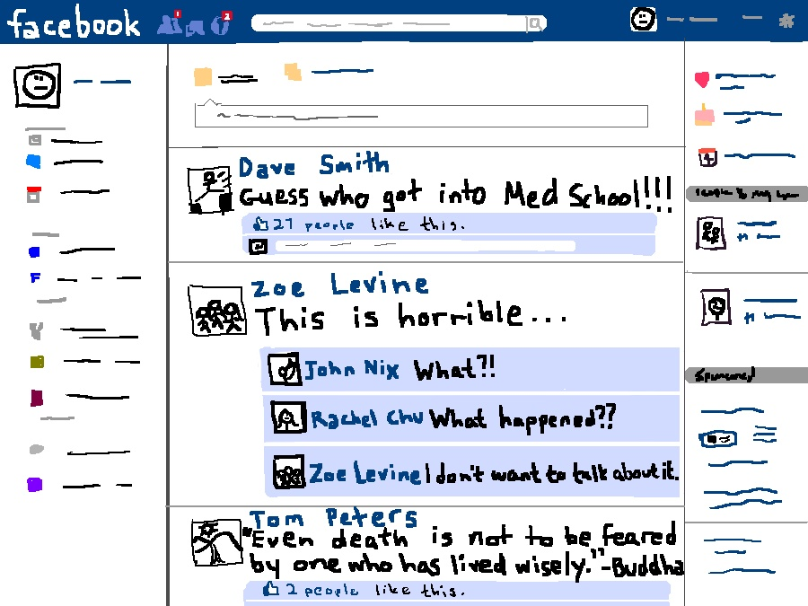
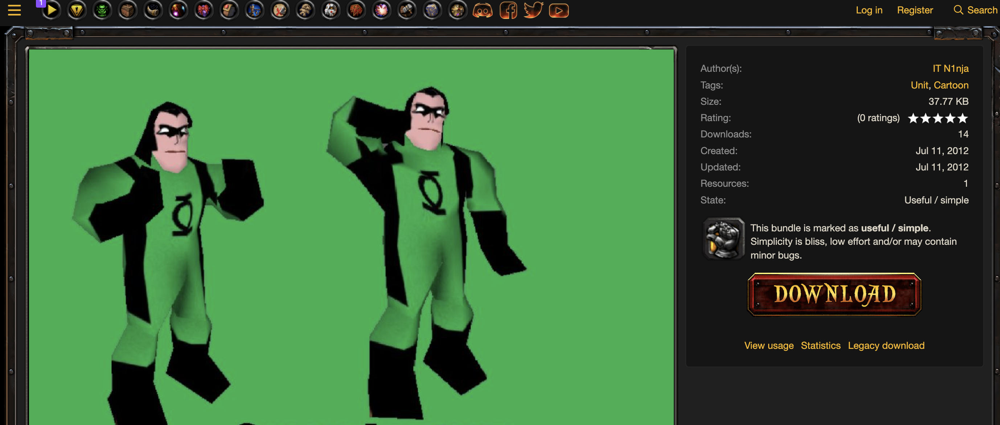
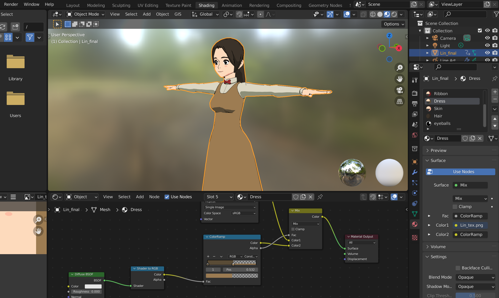

Responses
They are either reflective pieces on a conceptual issue that has arisen in class or a lab report-style write-up and critique about a project or experiment carried out.
They are either reflective pieces on a conceptual issue that has arisen in class or a lab report-style write-up and critique about a project or experiment carried out.
How we want to forget our digital past but remember at the same time, and how I am a digitally public-private person
Pi Ko
Feb 22, 2022 . 3 min read
If you have been browsing the web for over a decade, chances are that you might have written unthoughtful or silly content over the internet in your early days. Some of these posts are necessary because on social media, we would like our friends and family to see our carefully curated life events. However, more often than not, our social media archaeological evidence resembles the following.
Figure : Our Typical Facebook Timeline [ Source ]
These are mild examples. In worst cases, your past racist or sexist comments could land you in trouble. Even if you post non-controversial vacation photos on social media, burglars are constantly monitoring your Facebook profile to grab the chance while you are away. Therefore, digital privacy is practically essential. However, with time, people have been getting smarter. In her 2014 book, Disconnected: Youth, New Media, and the Ethics Gap, Harvard sociologist, Carrie James, points out that nowadays, many youths feel anxiety about managing the Internet afterlives of their offline activities, and some actively untag their photos on social media to avoid trouble.
In this response, I am addressing the questions "Are you a digitally private person? How does that manifest itself in your life?" and "Is the right to be forgotten important to you? Why?" simultaneously. The response contains some personal memories.
Yes, I used to write a public blog throughout my high school years about my experiences. I used to publicly post my personal projects on Facebook, YouTube and other sites.
However, I am now a very digitally private person for two reasons - (1) I would not like random people on the internet to stalk all my past digital traces and (2) all the online content I created previously are not beneficial to anyone else, apart from myself. Therefore, I have now removed all my online traces except the necessary information, and my Facebook account. Due to the right to be forgotten, I was able to delete all my accounts and data on websites and request those profiles to be removed from search engines.
I still do use Facebook, YouTube, GitHub and LinkedIn, but with the profile hidden from public view. I personally practice Digital Minimalism, philosophy of technology in which I focus my online time on a few carefully selected activities that support the things I value. For example, I would only use Facebook to stay connected to my old friends, but not post, and unfollow everyone to keep my timeline clean. This way, I generate less visible content, manifest more digital privacy in my life, and gain tranquillity.
“Simply put, humans are not wired to be constantly wired.”
― Cal Newport, Digital Minimalism: Choosing a Focused Life in a Noisy World
However, not every silly thing I posted in the past are worthless. I have had very strong interests in game design and robots since young and occasionally posted my games or robot projects online. A few months ago I stumbled across my old game project from exactly 10 years ago. I felt very nostalgic and was happy that I had not deleted them.
“Personally, after changing 5 hard disks in a decade, my online digital traces are the only remains of projects and memories of my younger self.”
I would argue this will be the problem with the right to be forgotten or digital privacy. Everyone (including me) was better at saving our content on external services than by ourselves. If we really ever wanted a digital photo album of our past online posts as nostalgia, it will not be possible after we wiped off our digital traces. Even if we back up this personal data on our own, our hard disks will deteriorate. In ten years, the cloud protected my data so well and reliably, more than I could protect my own data in my own physical hard disk. Thanks to the cloud, now I can see my 3D game art skill progress over a decade.
Figure : Pi's game characters in 2012 (Yes, my online alias was IT N1nja)
Figure : Pi's current game characters in 2022
Therefore, for such non-controversial nostalgia, we might want to sacrifice our digital privacy.
Although digital privacy and the right to be forgotten is a trend now, it is very hard to achieve total digital privacy. Even if you don't want your web presence, your employer might demand. (e.g. faculty profiles on university websites)
“If you plan to stand out, it is impossible to detach yourself from the system. For example, having an online portfolio with past coding projects are necessary to signal to your employer that you know how to code. Some recruiters might ask your LinkedIn profile. ”
However, even in such cases, we can still have our digital privacy. We can only utilize the web for professional purposes, and keep all our personal content offline (or not in public mode).
In conclusion, although the right to be forgotten important is very important for me to conceal my past from the public, and to achieve digital privacy, I personally do not want to forget everything. The greatest strength and weakness of the web is its ability to preserve our data indefinitely.
Nowadays, I would separate all my contents into professional and personal categories, then put the professional ones on the public portfolio for professional reasons, but keep everything personal private. Although I value privacy, everything is still kept on the cloud due to its robustness and reliability.
Figure : Web can preserve our data through very long time durations. [ Source ]
This is how I became digitally public-private. I am still keeping my archives of my blog, and all my past projects on the web. Most of them are just not public anymore, but I do visit them occasionally for a trip down the memory lane.
✓ Ready to Grade - 22nd Feb 2022